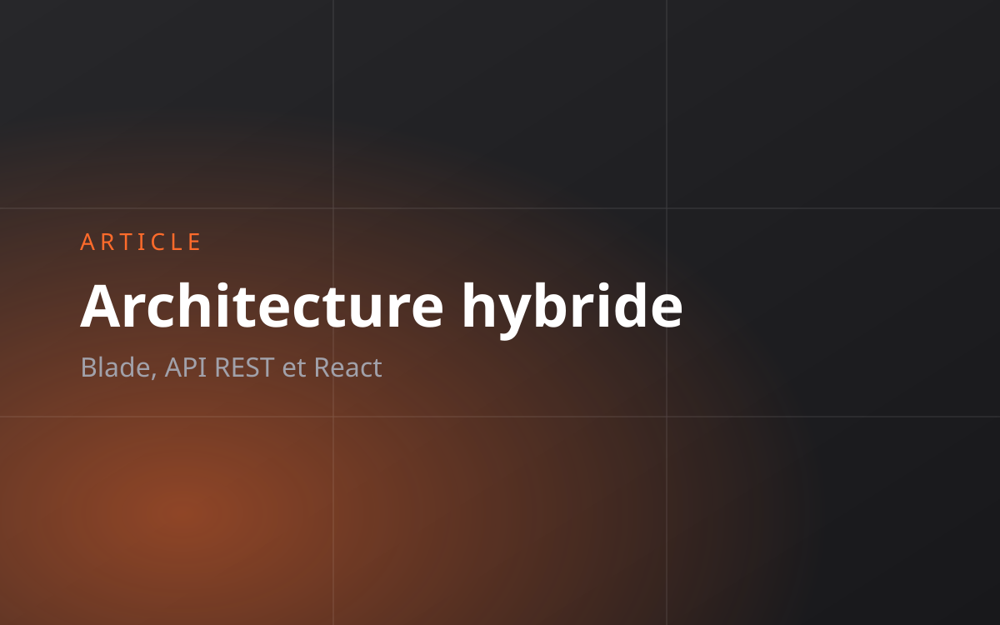

Blade pour l'admin, API REST pour le public
Une application monopage complète n'est pas toujours la bonne réponse. Voici la découpe hybride que j'utilise sur des projets réels, ce qu'elle fait gagner, et les trois cas où il ne faut surtout pas l'appliquer.

Le réflexe « tout en SPA »
Devant un nouveau projet, la réponse par défaut est souvent la même : une API côté serveur, une application monopage côté client, et l'affaire est entendue. C'est un choix défendable, mais c'est un choix, pas une évidence, et il se paie.
Une application monopage complète, c'est deux projets à faire vivre, une authentification à réimplémenter côté client, un référencement à récupérer d'une manière ou d'une autre, une chaîne de compilation à maintenir, et des états de chargement à dessiner pour chaque écran. Sur un site institutionnel doublé d'un back-office, cette dépense n'a souvent aucune contrepartie.
« La bonne question n'est pas “API ou pas API”, mais “quelle partie de cette application a réellement besoin d'être une application ?” »
La découpe que j'utilise
Sur plusieurs projets (dont un portfolio dynamique dont le front est en React et l'administration en Blade), je découpe selon un critère simple : qui utilise l'écran, et à quelle fréquence.
- Espace d'administration → Blade. Quelques utilisateurs internes, beaucoup de formulaires, des tableaux, des filtres. Le rendu serveur est imbattable ici : la validation, les messages d'erreur, la pagination et l'autorisation sont déjà résolus par le framework. Aucun état à synchroniser entre deux mondes.
- Site public → API REST consommée par React. Beaucoup de visiteurs, peu d'écrans, mais des exigences fortes sur l'animation, les transitions et la sensation d'immédiateté. C'est exactement le terrain où un front dédié apporte quelque chose.
Le même projet Laravel sert les deux. Une seule base de données, un seul modèle métier, un seul déploiement.
Faire cohabiter les deux proprement
Deux fichiers de routes, deux middlewares
Laravel sépare déjà routes/web.php et routes/api.php, avec des piles de middleware distinctes : session et CSRF d'un côté, sans état de l'autre. Il suffit de respecter cette frontière au lieu de la contourner.
// routes/web.php : administration, sessions
Route::middleware(['auth'])->prefix('admin')->group(function () {
Route::resource('articles', ArticleController::class);
Route::resource('gallery', GalleryController::class);
});
// routes/api.php : consommation publique, sans etat
Route::get('/articles', [ArticleApiController::class, 'index']);
Route::get('/articles/{article:slug}', [ArticleApiController::class, 'show']);Un seul modèle métier, deux présentations
La tentation est de dupliquer la logique : une version pour Blade, une version pour l'API. C'est la garantie que les deux divergeront. La règle que je m'impose : la logique vit dans le modèle ou dans une classe de service, jamais dans le contrôleur. Les contrôleurs ne font que choisir une présentation.
// Cote admin : une vue
return view('admin.articles.index', [
'articles' => Article::published()->latest()->paginate(20),
]);
// Cote API : une ressource JSON
return ArticleResource::collection(
Article::published()->latest()->paginate(12)
);Le published() est écrit une seule fois. Le jour où la définition d'un article publié change, elle change partout.
Les ressources API ne sont pas facultatives
Retourner directement un modèle en JSON expose tout ce qu'il contient, y compris les colonnes internes que vous ajouterez plus tard sans y penser. Une classe de ressource rend le contrat explicite :
class ArticleResource extends JsonResource
{
public function toArray($request): array
{
return [
'slug' => $this->slug,
'titre' => $this->title,
'extrait' => $this->excerpt,
'image' => $this->image_url,
'publie_le' => $this->published_at?->toDateString(),
];
}
}Les images et les fichiers
C'est le point de friction le plus fréquent. L'administration téléverse dans le stockage local, et le front doit afficher une URL absolue et stable. Exposer l'URL complète depuis la ressource, et non un chemin relatif que le front devra reconstruire, évite toute une catégorie de bugs le jour où le domaine ou le disque de stockage change.
Quand cette découpe ne convient pas
Elle a ses limites, et il faut les connaître :
- Une application mobile est prévue. Dans ce cas l'administration elle-même a intérêt à passer par l'API, sinon vous entretenez deux chemins d'écriture.
- Le back-office est le produit. Un outil interne très interactif (un éditeur, un tableau de bord temps réel) mérite un vrai front applicatif.
- Deux équipes séparées. Si le front et le back sont tenus par des personnes différentes, le contrat d'API devient une frontière organisationnelle utile, indépendamment de la technique.
Ce que ça change concrètement
Sur les projets où je l'ai appliquée, cette découpe supprime la majeure partie du travail réputé « d'intégration » : pas d'authentification à reconstruire côté client, pas de gestion d'état pour des écrans qui n'en ont pas besoin, pas de chaîne de compilation à maintenir pour afficher un formulaire de création d'article.
Le front public reste libre d'être aussi soigné qu'on le souhaite, parce qu'il ne porte que ce qui le concerne. Et l'administration reste ennuyeuse, ce qui, pour une administration, est exactement la qualité recherchée.
Une architecture à arbitrer sur votre projet ? Écrivez-moi, je donne volontiers un avis argumenté.